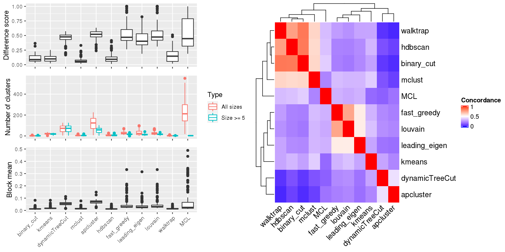

Figure 1.Compare clustering results. Left panel: The difference score, number of clusters and the block mean of different clusterings. Right panel: Concordance between clustering methods. The concordance measures how similar two clusterings are. The definition of the concordance score can be found here.

Table 1.Number of clusters identified by each clustering method. Numbers in the table indicate the number of clusters. The numbers inside the parentheses are the number of clusters with size >= 5.
| ID | binary_cut | kmeans | dynamicTreeCut | mclust | apcluster | hdbscan | fast_greedy | leading_eigen | louvain | walktrap | MCL | Details |
|---|---|---|---|---|---|---|---|---|---|---|---|---|
| E-GEOD-104288_g2_g1 | 1(1) | 29(21) | 56(56) | 7(7) | 101(42) | 9(9) | 28(20) | 0(0) | 24(21) | 2(2) | 217(2) | view |
| E-GEOD-11285_A-AFFY-44_g1_g2 | 9(7) | 25(22) | 86(86) | 4(4) | 156(67) | 4(4) | 19(14) | 14(11) | 15(15) | 2(2) | 227(6) | view |
| E-GEOD-11839_A-AFFY-44_g2_g1 | 1(1) | 23(18) | 69(69) | 4(4) | 119(58) | 14(14) | 20(16) | 16(13) | 16(14) | 6(2) | 177(3) | view |
| E-GEOD-12446_A-AFFY-44_g1_g4 | 1(1) | 11(8) | 14(14) | 5(5) | 27(11) | 3(3) | 34(7) | 35(6) | 34(7) | 1(1) | 48(1) | view |
| E-GEOD-12452_A-AFFY-44_g2_g1 | 1(1) | 17(17) | 105(105) | 8(8) | 191(83) | 2(2) | 17(17) | 6(6) | 16(16) | 7(4) | 161(3) | view |
| E-GEOD-12513_A-AFFY-44_g4_g3 | 1(1) | 29(21) | 48(47) | 4(4) | 80(34) | 3(3) | 41(22) | 53(21) | 34(25) | 1(1) | 330(2) | view |
| E-GEOD-16066_A-AFFY-44_g2_g1 | 3(3) | 15(15) | 85(85) | 10(10) | 138(71) | 18(18) | 16(13) | 23(14) | 16(14) | 2(2) | 188(2) | view |
| E-GEOD-1615_A-AFFY-33_g6_g5 | 2(2) | 23(23) | 126(126) | 4(4) | 221(99) | 2(2) | 24(22) | 21(17) | 25(24) | 1(1) | 230(5) | view |
| E-GEOD-1615_A-AFFY-34_g3_g2 | 2(2) | 9(5) | 10(10) | 7(3) | 16(6) | 2(2) | 52(1) | 41(1) | 52(1) | 1(1) | 64(1) | view |
| E-GEOD-19314_A-AFFY-44_g2_g4 | 1(1) | 22(22) | 96(96) | 20(20) | 153(70) | 22(22) | 15(10) | 4(4) | 12(11) | 2(2) | 125(2) | view |
| E-GEOD-20193_A-AFFY-44_g3_g1 | 3(3) | 24(20) | 79(79) | 2(2) | 135(65) | 16(16) | 31(24) | 41(29) | 27(20) | 3(2) | 435(4) | view |
| E-GEOD-20602_A-AFFY-33_g1_g2 | 2(2) | 29(25) | 103(103) | 8(8) | 171(81) | 3(3) | 17(14) | 14(12) | 15(15) | 10(2) | 237(3) | view |
| E-GEOD-21610_A-AFFY-44_g5_g1 | 1(1) | 31(25) | 62(62) | 7(7) | 110(49) | 12(12) | 30(23) | 51(29) | 28(21) | 1(1) | 367(6) | view |
| E-GEOD-22611_A-AFFY-44_g1_g6 | 4(3) | 21(14) | 28(28) | 5(5) | 46(22) | 8(8) | 45(13) | 59(12) | 37(15) | 1(1) | 186(2) | view |
| E-GEOD-22611_A-AFFY-44_g2_g3 | 2(2) | 22(18) | 57(57) | 4(4) | 101(40) | 7(7) | 26(19) | 0(0) | 26(21) | 4(2) | 269(3) | view |
| E-GEOD-22611_A-AFFY-44_g9_g4 | 1(1) | 31(22) | 70(70) | 5(5) | 133(50) | 15(15) | 26(20) | 25(20) | 22(20) | 3(2) | 361(4) | view |
| E-GEOD-24849_A-AFFY-44_g4_g3 | 3(3) | 14(13) | 35(35) | 6(5) | 71(25) | 8(8) | 29(16) | 43(13) | 24(16) | 5(3) | 205(2) | view |
| E-GEOD-25746_A-AFFY-44_g2_g1 | 3(3) | 18(15) | 42(42) | 3(3) | 71(33) | 7(7) | 26(16) | 25(14) | 20(15) | 6(2) | 193(4) | view |
| E-GEOD-26656_A-AFFY-44_g4_g2 | 1(1) | 21(19) | 93(93) | 7(7) | 179(68) | 19(19) | 23(21) | 22(16) | 23(21) | 1(1) | 303(4) | view |
| E-GEOD-28542_A-AFFY-141_g8_g6 | 3(3) | 24(24) | 103(103) | 4(4) | 176(83) | 2(2) | 17(12) | 9(9) | 11(10) | 2(2) | 206(3) | view |
| E-GEOD-29598_A-AFFY-37_g4_g3 | 3(2) | 29(25) | 71(70) | 4(2) | 130(55) | 3(3) | 40(32) | 98(41) | 39(34) | 1(1) | 551(3) | view |
| E-GEOD-31812_A-AFFY-141_g1_g2 | 4(4) | 20(20) | 96(96) | 3(3) | 159(78) | 2(2) | 16(13) | 6(6) | 16(14) | 2(2) | 231(3) | view |
| E-GEOD-31986_A-AFFY-141_g1_g3 | 1(1) | 20(20) | 86(86) | 3(3) | 148(65) | 3(3) | 17(13) | 6(6) | 17(16) | 2(2) | 138(4) | view |
| E-GEOD-32924_A-AFFY-44_g3_g1 | 4(1) | 5(3) | 5(4) | 1(1) | 8(5) | 1(1) | 36(0) | 23(0) | 36(0) | 1(1) | 37(0) | view |
| E-GEOD-3307_A-AFFY-33_g1_g7 | 1(1) | 29(28) | 108(108) | 5(5) | 199(77) | 5(5) | 21(15) | 25(21) | 19(18) | 4(2) | 224(4) | view |
| E-GEOD-3307_A-AFFY-34_g14_g15 | 4(4) | 20(17) | 48(48) | 2(2) | 79(46) | 3(2) | 36(23) | 59(26) | 30(22) | 2(2) | 299(3) | view |
| E-GEOD-3307_A-AFFY-34_g14_g20 | 3(2) | 20(12) | 36(36) | 2(2) | 68(27) | 5(5) | 61(31) | 97(18) | 56(26) | 1(1) | 290(1) | view |
| E-GEOD-3307_A-AFFY-34_g14_g24 | 2(2) | 26(18) | 48(48) | 2(2) | 85(37) | 9(9) | 51(30) | 98(22) | 45(29) | 1(1) | 349(2) | view |
| E-GEOD-3307_A-AFFY-34_g14_g25 | 1(1) | 16(11) | 22(21) | 3(3) | 38(17) | 4(4) | 71(7) | 1(1) | 70(5) | 1(1) | 175(0) | view |
| E-GEOD-33294_g1_g2 | 1(1) | 19(15) | 86(86) | 4(4) | 147(61) | 2(2) | 23(17) | 15(12) | 20(19) | 4(2) | 197(3) | view |
| E-GEOD-33643_A-AFFY-44_g7_g1 | 2(2) | 24(17) | 40(40) | 3(3) | 70(35) | 3(3) | 34(16) | 45(14) | 32(18) | 1(1) | 244(5) | view |
| E-GEOD-33643_A-AFFY-44_g7_g5 | 1(1) | 23(23) | 115(115) | 5(5) | 200(88) | 2(2) | 17(13) | 11(11) | 15(15) | 3(2) | 134(3) | view |
| E-GEOD-35006_A-AFFY-44_g2_g1 | 1(1) | 27(23) | 95(95) | 3(3) | 174(78) | 15(15) | 23(19) | 19(16) | 16(16) | 2(2) | 366(3) | view |
| E-GEOD-35006_A-AFFY-44_g6_g5 | 4(2) | 28(20) | 59(58) | 2(2) | 107(40) | 8(8) | 39(29) | 65(22) | 35(30) | 1(1) | 418(1) | view |
| E-GEOD-36509_A-AFFY-141_g4_g6 | 1(1) | 23(21) | 108(108) | 3(3) | 207(82) | 3(2) | 23(19) | 20(15) | 20(19) | 2(2) | 317(4) | view |
| E-GEOD-36761_g2_g1 | 1(1) | 30(28) | 107(107) | 3(3) | 193(68) | 2(2) | 17(15) | 12(12) | 15(14) | 11(3) | 149(3) | view |
| E-GEOD-3678_A-AFFY-44_g1_g2 | 1(1) | 18(17) | 46(46) | 3(3) | 84(41) | 11(11) | 31(22) | 54(21) | 26(22) | 1(1) | 258(6) | view |
| E-GEOD-37258_A-AFFY-44_g3_g2 | 2(2) | 32(25) | 57(57) | 2(2) | 102(38) | 11(11) | 26(20) | 42(16) | 24(18) | 1(1) | 279(7) | view |
| E-GEOD-37911_A-AFFY-141_g3_g1 | 1(1) | 29(21) | 84(84) | 2(2) | 151(58) | 3(3) | 33(25) | 0(0) | 28(24) | 1(1) | 509(5) | view |
| E-GEOD-37911_A-AFFY-141_g3_g2 | 2(2) | 21(17) | 70(70) | 3(3) | 115(52) | 4(4) | 29(22) | 52(25) | 26(25) | 5(3) | 381(3) | view |
| E-GEOD-39121_g1_g2 | 1(1) | 22(21) | 124(124) | 4(4) | 217(87) | 2(2) | 15(13) | 11(11) | 15(15) | 5(2) | 117(2) | view |
| E-GEOD-40750_A-AFFY-44_g2_g1 | 5(4) | 22(21) | 66(66) | 3(3) | 124(54) | 19(19) | 25(22) | 36(20) | 24(22) | 7(2) | 291(4) | view |
| E-GEOD-41322_A-AFFY-141_g1_g2 | 1(1) | 30(27) | 70(70) | 7(7) | 112(54) | 7(7) | 16(11) | 12(12) | 13(12) | 2(2) | 142(1) | view |
| E-GEOD-41459_A-AFFY-44_g1_g2 | 4(4) | 16(11) | 29(29) | 5(5) | 42(24) | 4(4) | 40(15) | 54(12) | 38(12) | 4(2) | 176(3) | view |
| E-GEOD-41663_A-AFFY-44_g6_g2 | 1(1) | 19(19) | 121(121) | 7(7) | 191(91) | 2(2) | 9(7) | 6(6) | 8(7) | 3(3) | 86(1) | view |
| E-GEOD-41678_A-AFFY-141_g8_g7 | 3(3) | 25(23) | 80(80) | 2(2) | 139(64) | 13(13) | 27(21) | 0(0) | 22(20) | 3(2) | 409(3) | view |
| E-GEOD-41745_g2_g1 | 1(1) | 27(27) | 95(95) | 8(8) | 137(74) | 19(19) | 13(10) | 8(8) | 9(8) | 3(2) | 64(2) | view |
| E-GEOD-44097_A-AFFY-44_g4_g3 | 1(1) | 21(20) | 79(79) | 8(8) | 114(63) | 14(14) | 17(11) | 8(8) | 11(9) | 2(2) | 183(2) | view |
| E-GEOD-44379_g2_g1 | 1(1) | 28(21) | 50(50) | 7(7) | 93(41) | 13(13) | 36(21) | 44(20) | 32(20) | 1(1) | 309(2) | view |
| E-GEOD-45581_A-AGIL-28_g3_g1 | 3(3) | 16(14) | 46(46) | 3(3) | 83(34) | 3(2) | 21(14) | 21(11) | 21(17) | 3(2) | 145(4) | view |
| E-GEOD-45581_A-AGIL-28_g3_g2 | 4(4) | 15(14) | 39(39) | 4(4) | 64(31) | 4(3) | 21(12) | 25(9) | 17(12) | 4(2) | 142(5) | view |
| E-GEOD-46513_g2_g1 | 1(1) | 19(10) | 24(24) | 3(3) | 40(23) | 4(4) | 42(13) | 56(11) | 37(16) | 1(1) | 134(1) | view |
| E-GEOD-46590_A-AFFY-141_g1_g2 | 2(2) | 22(20) | 90(90) | 5(5) | 163(67) | 16(16) | 27(19) | 25(16) | 21(15) | 2(2) | 358(4) | view |
| E-GEOD-46665_g3_g2 | 1(1) | 30(26) | 78(78) | 12(12) | 124(62) | 13(13) | 14(9) | 9(8) | 10(9) | 2(2) | 238(1) | view |
| E-GEOD-46687_A-AFFY-44_g3_g2 | 1(1) | 32(26) | 75(75) | 4(4) | 132(59) | 4(4) | 28(21) | 31(23) | 21(20) | 1(1) | 337(5) | view |
| E-GEOD-48350_A-AFFY-44_g6_g2 | 3(3) | 22(19) | 54(54) | 8(8) | 96(44) | 3(2) | 35(27) | 57(24) | 32(24) | 1(1) | 343(2) | view |
| E-GEOD-50697_A-AFFY-44_g1_g2 | 1(1) | 20(20) | 99(99) | 5(5) | 161(72) | 20(20) | 14(12) | 10(7) | 12(11) | 3(2) | 126(1) | view |
| E-GEOD-51005_g2_g1 | 1(1) | 14(11) | 29(29) | 9(8) | 54(18) | 5(5) | 31(12) | 51(13) | 26(15) | 1(1) | 113(1) | view |
| E-GEOD-51258_A-AFFY-44_g1_g2 | 1(1) | 22(20) | 101(101) | 5(5) | 199(82) | 17(17) | 22(18) | 12(12) | 22(19) | 2(2) | 305(2) | view |
| E-GEOD-52143_A-AFFY-141_g4_g3 | 3(2) | 26(16) | 43(43) | 5(4) | 72(42) | 9(9) | 51(21) | 78(23) | 48(28) | 1(1) | 319(1) | view |
| E-GEOD-53284_A-AFFY-141_g2_g1 | 2(2) | 22(18) | 91(91) | 2(2) | 160(67) | 3(2) | 29(26) | 34(26) | 27(27) | 1(1) | 494(4) | view |
| E-GEOD-53514_A-AFFY-141_g1_g2 | 1(1) | 33(28) | 98(98) | 3(3) | 177(69) | 3(2) | 26(21) | 18(18) | 21(19) | 2(2) | 418(8) | view |
| E-GEOD-53965_A-AFFY-141_g2_g1 | 1(1) | 22(20) | 112(112) | 4(4) | 193(80) | 2(2) | 21(14) | 10(10) | 15(14) | 2(2) | 172(3) | view |
| E-GEOD-54846_g1_g2 | 1(1) | 24(23) | 82(82) | 6(6) | 148(65) | 4(4) | 21(17) | 19(15) | 20(19) | 1(1) | 256(3) | view |
| E-GEOD-55048_g1_g2 | 1(1) | 20(20) | 82(82) | 4(4) | 148(71) | 3(3) | 20(16) | 14(11) | 18(14) | 2(2) | 264(3) | view |
| E-GEOD-55282_g4_g5 | 1(1) | 21(11) | 29(28) | 2(2) | 54(17) | 3(3) | 60(14) | 89(6) | 61(12) | 1(1) | 215(0) | view |
| E-GEOD-56235_g2_g1 | 2(2) | 22(22) | 101(101) | 2(2) | 177(87) | 23(23) | 17(13) | 12(12) | 12(11) | 3(2) | 118(3) | view |
| E-GEOD-56517_A-AGIL-28_g3_g7 | 1(1) | 16(10) | 27(26) | 2(2) | 44(17) | 5(5) | 61(13) | 95(4) | 59(11) | 1(1) | 191(0) | view |
| E-GEOD-56517_A-AGIL-28_g4_g8 | 3(3) | 25(19) | 60(60) | 9(9) | 105(42) | 10(10) | 35(25) | 0(0) | 30(25) | 1(1) | 368(6) | view |
| E-GEOD-56788_g2_g7 | 1(1) | 28(26) | 97(97) | 6(6) | 176(74) | 3(3) | 22(20) | 15(13) | 20(17) | 2(2) | 257(3) | view |
| E-GEOD-57198_A-AFFY-141_g1_g2 | 1(1) | 8(4) | 14(14) | 2(2) | 21(9) | 1(1) | 61(1) | 51(3) | 57(3) | 1(1) | 93(0) | view |
| E-GEOD-57935_A-AFFY-141_g7_g3 | 4(4) | 25(23) | 92(92) | 2(2) | 171(75) | 3(3) | 18(16) | 8(8) | 15(15) | 2(2) | 259(6) | view |
| E-GEOD-58379_g1_g2 | 1(1) | 16(13) | 47(47) | 6(6) | 74(32) | 9(9) | 25(16) | 28(14) | 24(16) | 12(2) | 207(3) | view |
| E-GEOD-58966_g3_g6 | 1(1) | 29(19) | 50(49) | 6(5) | 86(37) | 4(4) | 42(27) | 79(22) | 38(25) | 1(1) | 366(1) | view |
| E-GEOD-59234_A-AFFY-141_g4_g3 | 2(2) | 13(10) | 35(35) | 7(7) | 69(29) | 8(8) | 45(19) | 67(10) | 38(21) | 1(1) | 235(3) | view |
| E-GEOD-60052_g1_g2 | 3(3) | 24(24) | 118(118) | 5(5) | 215(103) | 25(25) | 15(13) | 7(7) | 11(10) | 2(2) | 117(2) | view |
| E-GEOD-60590_g2_g1 | 1(1) | 18(14) | 43(42) | 5(5) | 83(35) | 8(8) | 41(20) | 60(21) | 33(26) | 1(1) | 275(5) | view |
| E-GEOD-64912_g1_g2 | 1(1) | 9(8) | 16(16) | 5(5) | 32(12) | 3(3) | 37(7) | 49(5) | 36(8) | 1(1) | 46(1) | view |
| E-GEOD-65166_A-AFFY-141_g2_g1 | 2(2) | 18(12) | 38(38) | 5(5) | 72(28) | 9(9) | 44(20) | 80(14) | 40(26) | 1(1) | 294(1) | view |
| E-GEOD-67898_g1_g2 | 2(2) | 17(15) | 37(37) | 2(2) | 57(30) | 9(9) | 40(19) | 0(0) | 34(19) | 1(1) | 222(6) | view |
| E-GEOD-71289_g8_g5 | 5(5) | 15(11) | 35(34) | 2(2) | 57(25) | 3(2) | 47(14) | 0(0) | 43(17) | 1(1) | 222(4) | view |
| E-GEOD-71289_g8_g7 | 2(2) | 9(9) | 18(18) | 5(5) | 35(14) | 2(2) | 30(11) | 36(9) | 28(11) | 1(1) | 27(1) | view |
| E-GEOD-71404_A-AFFY-44_g10_g1 | 4(4) | 11(10) | 29(29) | 8(8) | 50(26) | 8(8) | 28(16) | 45(15) | 22(17) | 1(1) | 128(3) | view |
| E-GEOD-80060_A-AFFY-44_g1_g2 | 1(1) | 30(20) | 54(54) | 3(3) | 96(45) | 9(9) | 40(26) | 44(24) | 33(27) | 1(1) | 368(3) | view |
| E-GEOD-81046_g6_g4 | 1(1) | 25(21) | 71(70) | 7(7) | 122(49) | 4(4) | 34(27) | 47(30) | 31(24) | 1(1) | 383(5) | view |
| E-GEOD-95132_g1_g2 | 1(1) | 26(23) | 78(78) | 3(3) | 142(63) | 3(3) | 24(18) | 19(12) | 20(20) | 5(2) | 236(3) | view |
| E-GEOD-9764_A-AFFY-44_g3_g2 | 1(1) | 22(20) | 85(85) | 5(5) | 152(64) | 3(2) | 19(16) | 15(11) | 15(15) | 5(2) | 177(6) | view |
| E-MEXP-1216_A-AFFY-44_g1_g3 | 4(4) | 21(21) | 112(112) | 5(5) | 195(90) | 2(2) | 14(9) | 7(7) | 10(9) | 2(2) | 85(2) | view |
| E-MEXP-3641_A-AFFY-44_g1_g2 | 4(4) | 27(21) | 56(56) | 2(2) | 101(48) | 13(13) | 27(20) | 47(20) | 26(20) | 5(2) | 287(4) | view |
| E-MTAB-1900_A-AFFY-141_g7_g3 | 3(3) | 21(18) | 108(108) | 9(9) | 177(76) | 23(23) | 21(15) | 11(11) | 15(14) | 3(2) | 176(1) | view |
| E-MTAB-2533_A-AFFY-141_g1_g2 | 1(1) | 14(7) | 22(21) | 3(3) | 44(15) | 3(3) | 67(9) | 0(0) | 64(11) | 1(1) | 190(0) | view |
| E-MTAB-2581_A-AFFY-141_g4_g2 | 1(1) | 30(25) | 88(88) | 3(3) | 165(64) | 2(2) | 23(20) | 10(8) | 20(19) | 8(3) | 177(1) | view |
| E-MTAB-3082_A-AFFY-141_g4_g2 | 1(1) | 20(19) | 96(96) | 2(2) | 176(73) | 2(2) | 20(16) | 0(0) | 18(16) | 2(2) | 205(3) | view |
| E-MTAB-3447_g4_g1 | 3(3) | 17(12) | 33(32) | 7(7) | 60(27) | 9(9) | 35(21) | 48(14) | 30(23) | 1(1) | 172(4) | view |
| E-MTAB-3447_g5_g3 | 1(1) | 23(21) | 86(86) | 2(2) | 168(72) | 13(13) | 25(20) | 25(20) | 21(19) | 1(1) | 460(3) | view |
| E-MTAB-3645_A-AFFY-141_g1_g5 | 3(3) | 30(25) | 73(73) | 2(2) | 122(58) | 11(11) | 33(22) | 61(26) | 23(21) | 1(1) | 371(2) | view |
| E-MTAB-3645_A-AFFY-141_g2_g1 | 2(2) | 16(16) | 103(103) | 7(7) | 168(76) | 3(3) | 14(10) | 5(5) | 14(14) | 2(2) | 158(4) | view |
| E-MTAB-3645_A-AFFY-141_g4_g8 | 1(1) | 32(28) | 83(83) | 4(4) | 139(66) | 3(3) | 37(27) | 42(22) | 31(27) | 1(1) | 456(4) | view |
| E-MTAB-4054_g2_g3 | 5(5) | 19(18) | 66(66) | 5(5) | 107(50) | 2(2) | 16(12) | 16(12) | 12(10) | 2(2) | 132(2) | view |
| E-MTAB-4511_g2_g1 | 4(4) | 30(26) | 123(123) | 3(3) | 226(86) | 2(2) | 18(15) | 9(7) | 16(13) | 2(2) | 143(1) | view |
| E-MTAB-4902_g1_g2 | 1(1) | 27(18) | 47(47) | 10(9) | 93(38) | 3(3) | 27(19) | 25(15) | 27(17) | 1(1) | 217(3) | view |
| E-MTAB-5121_A-MEXP-2183_g3_g6 | 7(4) | 19(19) | 94(94) | 6(6) | 153(80) | 2(2) | 16(15) | 7(7) | 15(15) | 2(2) | 134(2) | view |
| E-MTAB-5219_A-AFFY-141_g1_g4 | 5(5) | 19(17) | 54(54) | 3(3) | 105(49) | 11(11) | 20(14) | 29(18) | 20(16) | 3(2) | 233(3) | view |
| E-MTAB-5219_A-AFFY-141_g1_g5 | 4(3) | 31(27) | 123(122) | 4(4) | 207(98) | 25(25) | 21(19) | 16(11) | 16(14) | 2(2) | 253(7) | view |
| E-MTAB-5219_A-AFFY-141_g1_g6 | 3(3) | 23(22) | 98(98) | 2(2) | 173(83) | 3(2) | 21(19) | 25(17) | 17(16) | 2(2) | 235(5) | view |
| E-MTAB-5219_A-AFFY-141_g1_g9 | 2(2) | 22(16) | 41(41) | 2(2) | 71(33) | 3(3) | 42(20) | 41(9) | 29(18) | 1(1) | 299(4) | view |
| E-MTAB-5235_A-AFFY-44_g2_g1 | 1(1) | 24(23) | 105(105) | 11(11) | 195(83) | 28(28) | 16(14) | 7(7) | 16(14) | 5(2) | 108(1) | view |
| E-MTAB-5783_g2_g1 | 1(1) | 23(22) | 85(85) | 3(3) | 149(71) | 2(2) | 21(17) | 9(9) | 17(15) | 2(2) | 207(2) | view |
| E-MTAB-5873_g8_g1 | 1(1) | 26(24) | 75(75) | 6(6) | 141(66) | 3(3) | 28(21) | 21(18) | 19(17) | 3(2) | 331(3) | view |
| E-MTAB-5984_g4_g8 | 1(1) | 26(21) | 75(75) | 8(8) | 136(61) | 17(17) | 26(19) | 49(26) | 19(18) | 5(2) | 252(5) | view |
| E-MTAB-6045_A-GEOD-16686_g11_g7 | 1(1) | 17(15) | 92(92) | 8(8) | 162(79) | 20(20) | 16(13) | 15(14) | 12(12) | 4(2) | 172(3) | view |
| E-MTAB-6045_A-GEOD-16686_g17_g8 | 1(1) | 23(23) | 105(105) | 4(4) | 172(86) | 2(2) | 16(14) | 12(9) | 15(12) | 2(2) | 141(4) | view |
| E-MTAB-6045_A-GEOD-16686_g3_g7 | 2(2) | 14(12) | 37(37) | 4(4) | 69(31) | 7(7) | 32(15) | 38(9) | 27(16) | 1(1) | 181(3) | view |
| E-MTAB-6087_g12_g11 | 5(5) | 26(25) | 79(79) | 3(3) | 135(64) | 3(2) | 18(11) | 8(8) | 13(12) | 2(2) | 251(5) | view |
| E-MTAB-6087_g7_g6 | 3(3) | 25(21) | 54(54) | 2(2) | 96(45) | 2(2) | 19(12) | 15(12) | 16(15) | 8(2) | 203(2) | view |
| E-MTAB-6087_g9_g8 | 3(3) | 26(26) | 120(120) | 3(3) | 205(103) | 2(2) | 14(12) | 17(14) | 12(11) | 2(2) | 150(4) | view |
| E-MTAB-6298_g9_g8 | 3(3) | 24(21) | 96(96) | 6(6) | 176(73) | 3(2) | 16(14) | 11(11) | 13(12) | 2(2) | 180(2) | view |
| E-MTAB-6556_g1_g3 | 1(1) | 21(20) | 94(94) | 9(9) | 154(82) | 16(16) | 14(12) | 7(7) | 12(10) | 3(2) | 67(1) | view |
| E-MTAB-6681_g3_g1 | 2(1) | 3(1) | 6(5) | 3(2) | 12(4) | 3(3) | 42(0) | 29(0) | 42(0) | 1(1) | 46(0) | view |
| E-MTAB-6681_g4_g2 | 2(2) | 25(18) | 47(47) | 5(5) | 88(37) | 5(5) | 48(23) | 72(17) | 43(26) | 1(1) | 347(2) | view |
| E-MTAB-6681_g6_g5 | 1(1) | 5(2) | 5(4) | 1(1) | 10(4) | 1(1) | 38(0) | 26(0) | 38(0) | 1(1) | 41(0) | view |
| E-MTAB-6848_A-AFFY-141_g2_g4 | 3(3) | 34(24) | 73(73) | 2(2) | 131(50) | 2(2) | 35(27) | 43(26) | 34(31) | 1(1) | 437(3) | view |
| E-MTAB-6849_g2_g1 | 1(1) | 22(22) | 113(113) | 9(9) | 199(86) | 3(3) | 16(13) | 14(12) | 13(12) | 7(2) | 166(2) | view |
| E-MTAB-69_A-AFFY-44_g3_g1 | 1(1) | 26(25) | 87(87) | 7(7) | 152(62) | 18(18) | 19(15) | 21(17) | 19(18) | 9(3) | 144(2) | view |
| E-MTAB-7000_g2_g4 | 2(2) | 25(22) | 84(84) | 3(3) | 156(65) | 17(17) | 24(18) | 17(12) | 20(19) | 4(2) | 217(4) | view |
| E-MTAB-7029_g5_g2 | 1(1) | 31(27) | 101(101) | 2(2) | 191(82) | 3(2) | 21(18) | 13(12) | 16(14) | 2(2) | 320(3) | view |
| E-MTAB-7061_g18_g11 | 4(4) | 16(16) | 100(100) | 3(3) | 179(70) | 2(2) | 24(19) | 30(25) | 18(17) | 3(3) | 335(3) | view |
| E-MTAB-7061_g18_g13 | 2(1) | 3(2) | 6(5) | 1(1) | 9(4) | 3(3) | 36(0) | 26(0) | 36(0) | 1(1) | 41(0) | view |
| E-MTAB-7061_g18_g14 | 3(2) | 4(3) | 4(4) | 2(2) | 7(4) | 1(1) | 21(2) | 18(1) | 21(2) | 1(1) | 18(1) | view |
| E-MTAB-7061_g18_g4 | 4(2) | 7(4) | 8(8) | 3(3) | 11(7) | 1(1) | 38(2) | 26(2) | 38(2) | 1(1) | 48(1) | view |
| E-MTAB-7061_g18_g6 | 2(2) | 12(10) | 24(24) | 14(12) | 38(19) | 5(5) | 25(10) | 28(8) | 24(13) | 6(2) | 122(1) | view |
| E-MTAB-7169_A-MEXP-2320_g2_g1 | 3(3) | 38(30) | 80(80) | 2(2) | 154(60) | 2(2) | 25(22) | 19(17) | 20(20) | 2(2) | 335(5) | view |
| E-MTAB-7294_g7_g3 | 1(1) | 21(21) | 88(88) | 17(17) | 175(60) | 2(2) | 21(19) | 12(9) | 22(21) | 2(2) | 176(1) | view |
| E-MTAB-7498_g3_g1 | 2(1) | 3(2) | 4(3) | 1(1) | 7(2) | 1(1) | 24(0) | 17(0) | 24(0) | 1(1) | 26(0) | view |
| E-MTAB-7672_A-AFFY-141_g6_g5 | 1(1) | 26(26) | 72(72) | 10(10) | 112(63) | 20(20) | 18(13) | 23(14) | 18(17) | 2(2) | 212(5) | view |
| E-MTAB-7884_g4_g1 | 1(1) | 16(13) | 33(33) | 3(3) | 51(26) | 5(5) | 57(13) | 90(12) | 55(16) | 1(1) | 241(0) | view |
| E-MTAB-7884_g5_g2 | 1(1) | 15(8) | 25(24) | 3(3) | 45(19) | 3(3) | 58(10) | 76(9) | 53(9) | 1(1) | 188(0) | view |
| E-MTAB-7938_g3_g2 | 1(1) | 7(5) | 11(11) | 5(4) | 14(7) | 1(1) | 56(1) | 43(1) | 55(1) | 1(1) | 72(0) | view |
| E-MTAB-8198_g2_g1 | 1(1) | 27(23) | 93(93) | 4(4) | 153(80) | 11(11) | 13(10) | 5(5) | 11(9) | 3(2) | 145(1) | view |
| E-MTAB-8214_g1_g2 | 3(3) | 22(21) | 111(111) | 7(7) | 190(89) | 3(3) | 18(17) | 14(10) | 16(16) | 2(2) | 168(3) | view |
| E-MTAB-8572_g2_g1 | 1(1) | 19(17) | 60(60) | 9(9) | 118(55) | 13(13) | 26(21) | 52(24) | 27(27) | 1(1) | 306(3) | view |